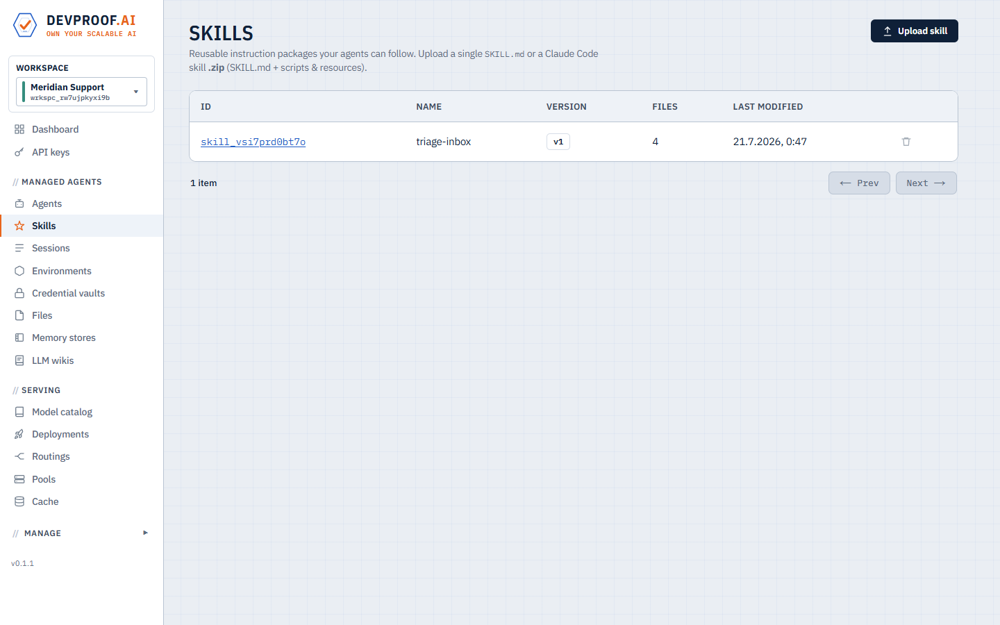
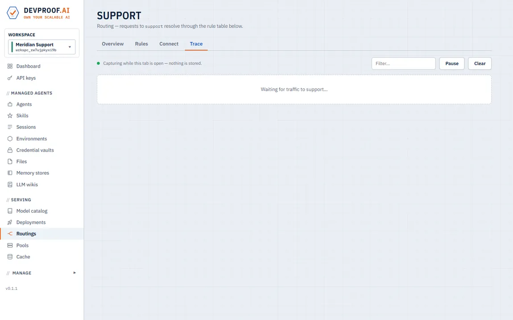
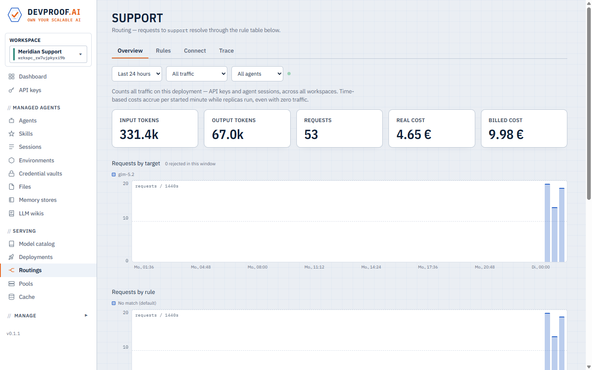
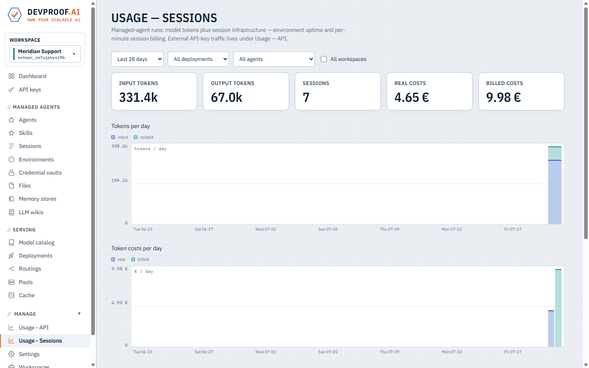
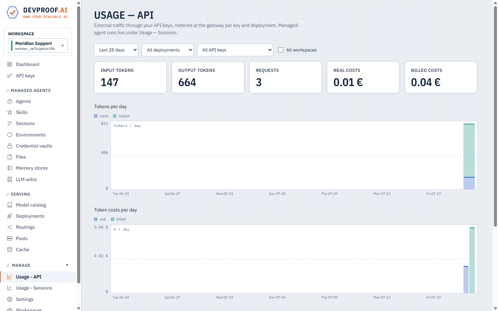

Docs
Concepts
The platform in one page: what each object is and how they fit together.
Workspaces
Everything on the agents side — agents, sessions, files, skills, memory, wikis, vaults, API keys — lives inside a workspace, the multi-tenancy boundary. Serving (catalog, pools, deployments, routings) is global: models are shared infrastructure; workspaces consume them and are metered separately.
The serving plane
Catalog
A curated list of open models with parameters, context window, quantization format, and per-replica hardware requirements. Custom entries can point at any weight source.
Pools & deployments
A pool describes where model pods may run: node selectors, tolerations, and a replica budget the platform enforces across all of the pool's deployments. A deployment serves one catalog model in a pool, with per-replica CPU/memory taken from the catalog entry (overridable at deploy time) and, for reasoning-capable models, a chosen thinking budget.
Deployments are elastic in both directions:
- Scale up — the operator watches live engine metrics (queue depth, in-flight requests) and adds replicas between min and max, clamped to the pool budget.
- Scale to zero — a min-0 deployment sleeps after a configurable idle period. It stays routed at the gateway, so the first request is held while the model wakes and released when it's servable — callers see latency, never an error.

A local model sleeping at zero replicas and an external endpoint — one gateway serves both.
Routings
Clients call a routing, not a model. A routing is an ordered rule table: each rule has conditions (context size, spend or token budgets per key / workspace / agent, time windows, traffic splits, or a model-based classifier) and a target; the terminal either routes or rejects. Rule edits apply live. External API keys can only call routings — which is what makes budget enforcement inescapable.
A table that keeps small prompts on the local model while the workspace is under its monthly token budget, sends everything else to the external endpoint, and rejects once the budget is gone:

Conditions within a rule are ANDed; rules evaluate top-down, first match wins.
Once the budget condition stops matching, nothing routes and the terminal rejects with a clean error. The same table is plain JSON on the API for scripting.
The seven condition types
Rules combine conditions freely (ANDed within a rule, up to ten per rule, up to fifty rules per routing):
context — matches on the estimated size of the incoming prompt. The classic use: keep everyday prompts on a small local model and burst oversized documents to a big-context endpoint.
{ "type": "context", "op": ">", "tokens": 120000 }cost — matches on accumulated spend from the cost ledgers, scoped to the
calling key, workspace, agent, this
routing, or the target model; over a calendar
month, day, or a rolling window of hours.
ledger picks which money is counted: billed (what you
charge consumers) or real (what the infrastructure costs you). This is
how you build free tiers and per-customer budgets that enforce themselves:
{ "type": "cost", "ledger": "billed", "scope": "key",
"op": "<", "threshold": 50, "window": { "kind": "day" } }tokens — like cost, but counts tokens instead of money.
Tokens are always metered, independent of any billing configuration, so this
works even with cost tracking switched off. A monthly workspace cap:
{ "type": "tokens", "scope": "workspace",
"op": "<", "threshold": 500000000, "window": { "kind": "month" } }available — matches only while the rule's target is currently routable. Put a local model first and an external endpoint below it, and you have automatic failover — traffic returns home when the local model is back:
{ "conditions": [ { "type": "available" } ], "target": "qwen-local" },
{ "conditions": [], "target": "claude-remote" }time — matches inside a time window (days, HH:MM range, an IANA timezone). Serve office hours on the fast model, nights and weekends on the cheap one:
{ "type": "time", "days": ["mon","tue","wed","thu","fri"],
"from": "08:00", "to": "18:00", "tz": "Europe/Berlin" }split — matches a percentage of traffic. The canary: send 10% of requests to a new model and watch its stats before committing:
{ "type": "split", "percent": 10 }classify — the model-as-router: a (typically small, local) deployment
labels each request, and the rule matches when the label is in match.
Route coding traffic to a code model without your clients changing anything:
{ "type": "classify", "deployment": "qwen-mini",
"labels": { "code": "programming, debugging, software",
"chat": "everything else" },
"match": ["code"] }Every decision is visible per request in the routing's live trace — which rule matched, the evaluated values, and the resolved target.
External endpoints
OpenAI, Anthropic, OpenRouter or custom endpoints registered behind the same gateway, with provider keys stored server-side. Routing rules can mix local and external targets — e.g. local by default, cloud for oversized contexts.
Gateway
One endpoint for everything: API-key auth, per-call usage metering, routing resolution, and wake-on-request. It speaks both the OpenAI and Anthropic wire formats regardless of what serves the model underneath.
The agents plane
Agents & versions
An agent is a named, versioned configuration: routing, system prompt, tools, environment, skills, memory access, wiki access, subagents, MCP servers. Editing an agent creates a new version; running sessions keep the version they started with.
Sessions
A session is one job given to an agent. Each turn runs as a Kubernetes Job in an isolated pod; between turns the session is idle and costs nothing. Every prompt, thought, tool call and result is an event in the transcript — streamed live to the console. Sessions checkpoint their state and are resumable, including after failures.

Sessions with tokens and billed cost — including a delegated child linked to its parent.
Files
Sessions consume and produce files: uploads are attached at session start or on any follow-up turn and appear inside the pod; whatever the agent writes to its outputs directory is collected at turn end. Files are immutable, workspace-scoped, stored in S3-compatible object storage, and linked to every session that used them.
Environments
The sandbox profile a session pod runs with: an egress allowlist enforced by a
per-environment proxy and network policy (no internet by default), pod resources,
and the /work disk — ephemeral by default, or a durable per-session
volume. Package-manager access (PyPI, npm) is a separate, explicit toggle.

This environment blocks all egress and caps pod resources — sessions inherit it.
Skills
Versioned packages of instructions and files an agent can load on demand —
progressive disclosure keeps prompts small: the agent sees an index and pulls only
the files it needs. A skill is a SKILL.md plus any bundled reference
files, uploaded as markdown or a zip; agents list their skills and load them with
a built-in tool at run time.

Skills are versioned and shared per workspace — update once, every agent follows.
MCP servers
Agents can use any Model Context Protocol server as extra tools. Server URLs are part of the agent config; auth tokens are referenced from a credential vault and expanded inside the pod — never written into job specs or prompts. When an environment allows it, the egress allowlist opens automatically for the configured servers' hosts, and a bundled registry makes common servers one click.
Memory stores
Per-agent long-term memory: a small file tree the agent reads at session start and updates as it learns. Changes sync back diff-based at turn end.
LLM wikis
Shared knowledge bases mounted into session pods at /mnt/wiki/<name>.
Any number of agents may read a wiki; exactly one agent is its
writer and runs single-session, so writes never race. Readers report
corrections by delegating to the writer — the platform serializes its queue. The
structure is enforced by convention: an index.md catalog, one page per
topic with frontmatter, and an append-only log.md.

This page was researched, written and filed by the wiki's writer agent.
Delegation
An agent may delegate work to configured subagents. A delegation is a full child session, linked to the parent in the transcript; the parent can follow up on the child across turns and finally mark it complete.
Credential vaults
Typed secrets (environment variables, bearer tokens, MCP OAuth) stored as Kubernetes secrets and injected into session pods at launch — values never appear in prompts, transcripts, or job specs.
Tracing & observability
Nothing on the platform is a black box — there are three layers of visibility, from a single wire request up to fleet-wide usage:
The live gateway trace
Every routing has a Trace tab: a live, capture-only view of the requests flowing through it (nothing is stored — it captures while the tab is open). Each request shows who called (API key or agent session), the rule evaluation — which conditions were checked, their evaluated values, and the resolved target — plus the exact wire messages and token counts of the response:

Recorded live: requests arrive, and expanding one shows the matched rule, target and wire messages.
Per-routing and per-deployment stats
Each routing's Overview charts requests by target and by rule (including rejects), plus token and cost rates, filterable by API key and agent over windows from one minute to 48 hours — so you can watch a canary rule take traffic in real time:

Live stats per routing: requests by target, by rule, tokens and cost.
Session transcripts
On the agents side, the session transcript is the trace: every prompt, thought, tool call, delegation and result, streamed live, with a Debug view of the raw events underneath.
Usage & cost tracking
Every gateway call is metered at the moment it happens — token counts land per workspace, API key, agent, session, routing and deployment, and session token totals tick live mid-turn.
Two ledgers are kept strictly apart:
- Real cost — what the platform costs you: external-provider tokens at their prices, plus time-based infrastructure costs (model pods, session pods, environments) accrued per started minute while replicas run.
- Billed cost — what you charge your consumers, at prices you set: per token per model, per pod-hour, per session-minute. Idle-to-zero sessions mean a session bills only for minutes in which it actually ran.
Prices are stamped at usage time, so history never changes retroactively when you edit a price. Routing rules can enforce budgets against either ledger (or plain token counts) — see cost and tokens conditions — which turns the metering from reporting into an enforceable contract.

Managed-agent usage per workspace; API-key traffic has its own view.

External API traffic, metered per key and deployment — real vs billed, kept apart.
The scale posture
Everything is built to scale to hundreds or thousands of pods — models autoscale on live load, agent turns are independent Jobs, and the same chart runs on a laptop and a production cluster. The building blocks are standard: open weights, standard Kubernetes, OpenAI/Anthropic-compatible APIs — no rewrite to move in or out.